Where the earth shook this month. USGS logged 726 M4.5+ quakes in the 30 days to Oct 28, 18 of them M6+; the largest was M7.7 12 km WSW of Pitaloza Arriba, Panama on Oct 9 (UTC). Source: https://earthquake.usgs.gov/earthquakes/map/
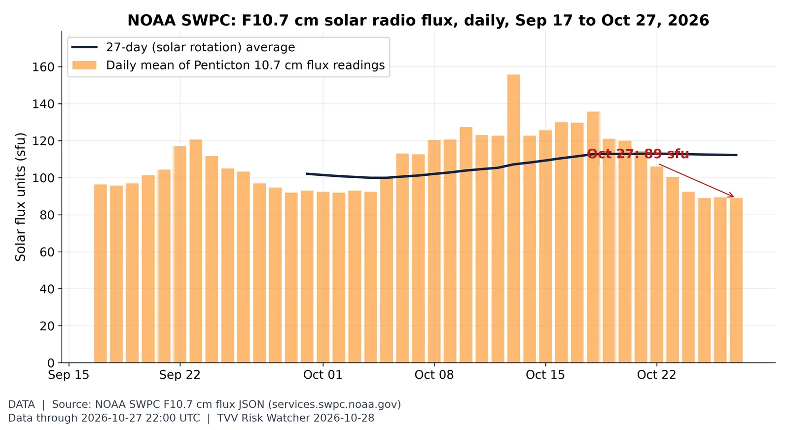
Solar activity proxy: F10.7 flux. The 10.7 cm solar radio flux, a standard proxy for solar activity and upper-atmosphere drag on satellites, was 89 sfu on Oct 27 (27-day average 112; window range 89-156). Source: https://www.swpc.noaa.gov/phenomena/f107-cm-radio-emissions
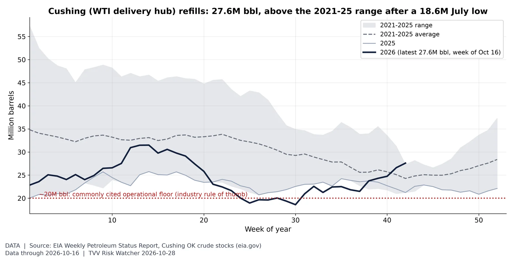
Cushing swings from tank bottoms to a glut. Crude stocks at Cushing, the delivery point for NYMEX WTI futures, were 27.6M barrels in the week to Oct 16, vs a 2021-25 average of 24.3M for that week (range 21.2-27.3M, so above the five-year high); the 2021-26 low was 18.6M (Jul 24, 2026). EIA's report for the week to Oct 23 is due 10:30 AM ET today, after this build. The 20M-barrel floor is an industry rule of thumb, not an EIA figure. Source: https://www.eia.gov/dnav/pet/hist/LeafHandler.ashx?n=PET&s=W_EPC0_SAX_YCUOK_MBBL&f=W
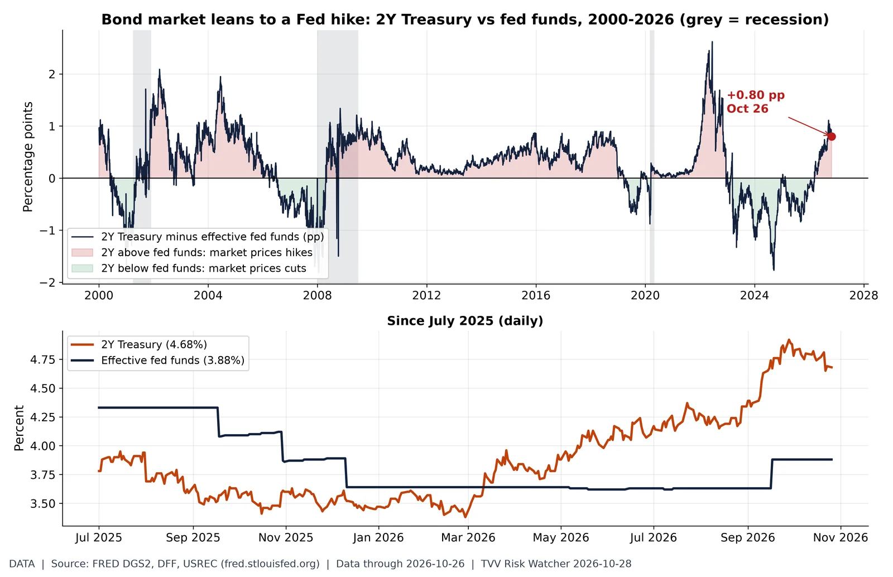
The 2-year yield says hikes are coming. Before today's FOMC decision the 2-year Treasury yield (4.68%, Oct 26) sat +0.80 pp vs the effective fed funds rate (3.88%); last this high on Sep 25, 2026. 12-month range of the gap: -0.65 to +1.11 pp. A positive gap means the market prices a higher policy rate over the next two years. Pre-decision data only. Source: https://fred.stlouisfed.org/series/DGS2
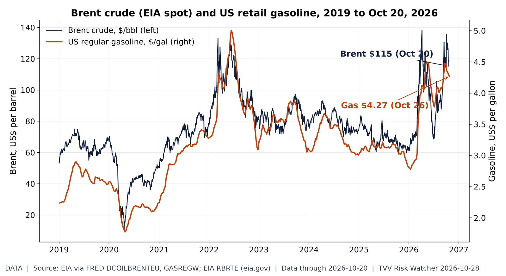
Oil shock at the pump. EIA Brent spot was $115.22 on Oct 20 (period peak $138 in April 2026); EIA's US regular gasoline average was $4.27 in the week of Oct 26. Both EIA series lag the market by about a week. Source: https://fred.stlouisfed.org/series/DCOILBRENTEU
Is the Ebola response keeping up?. INSP SitRep 165 (situation Oct 26): 7-day average lab positivity 15.5% (peak 7-day 52.4% around May 29); 85.0% of listed contacts seen daily (7-day avg); 34,935 contacts under follow-up. Lower positivity and higher follow-up mean better control. values as transcribed by ebola-tracker.org from INSP PDFs. Source: https://ebola-tracker.org/en/database/
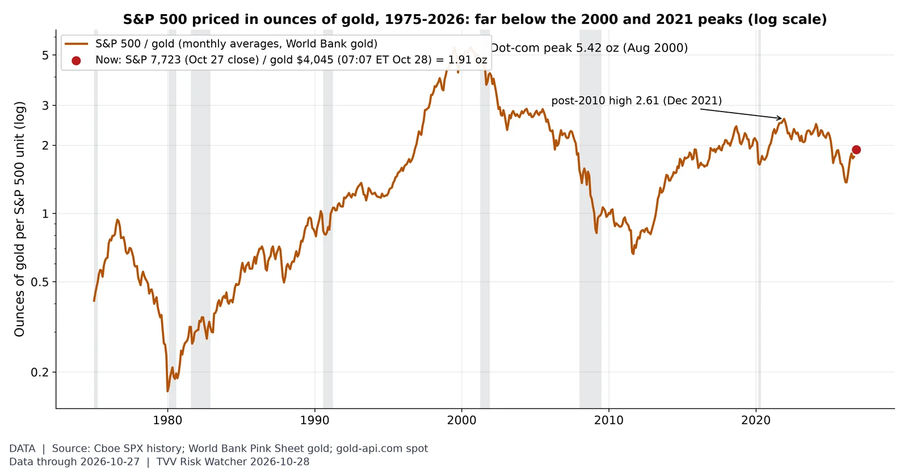
In gold terms, stocks are not at a record. The S&P 500 (7,722.60 at the Oct 27 close) buys 1.91 oz of gold at $4,045 (gold-api.com spot 07:07 ET Oct 28), vs a dot-com peak of 5.42 oz (Aug 2000) and a post-2010 high of 2.61 (Dec 2021); the ratio was last this low around Nov 2020. The monthly line uses World Bank gold averages through Sep 2026. Source: https://www.cboe.com/us/indices/dashboard/spx/
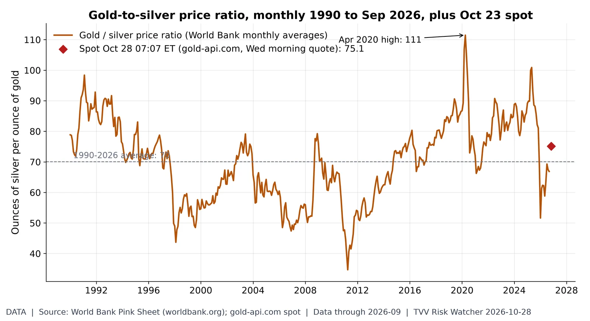
Gold-to-silver ratio. An ounce of gold buys 75.1 ounces of silver at the Wednesday-morning spot (gold $4,045, silver $53.84), vs 66.9 in September and a 1990-2026 average of 70. Source: https://www.worldbank.org/en/research/commodity-markets
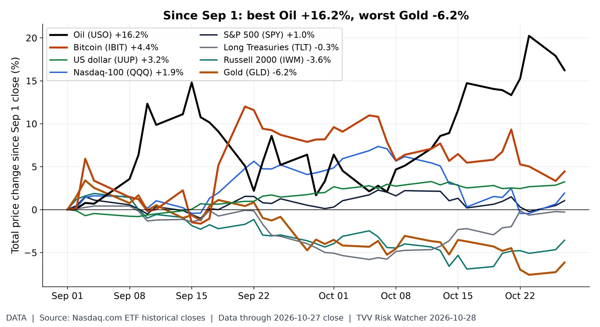
Cross-asset scoreboard since Sep 1. Price change from the Sep 1 close to Oct 27: Oil (USO) +16.2%; Bitcoin (IBIT) +4.4%; US dollar (UUP) +3.2%; Nasdaq-100 (QQQ) +1.9%; S&P 500 (SPY) +1.0%; Long Treasuries (TLT) -0.3%; Russell 2000 (IWM) -3.6%; Gold (GLD) -6.2%. ETF closes (Nasdaq.com), price only, no dividends. Source: https://www.nasdaq.com/market-activity/etf/spy/historical
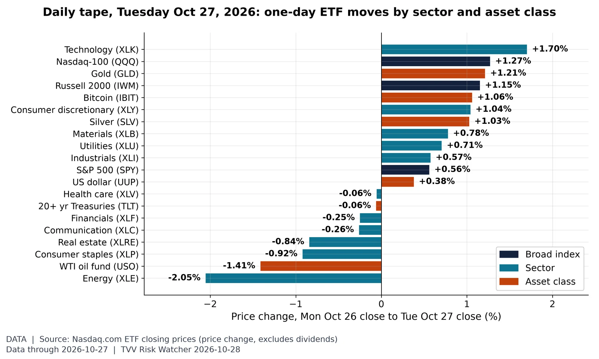
The last session by sector. On Tuesday Oct 27, the best performer was Technology (XLK, +1.70%) and the worst Energy (XLE, -2.05%), with SPY +0.56% and QQQ +1.27%. Source: https://www.nasdaq.com/market-activity/etf/spy/historical
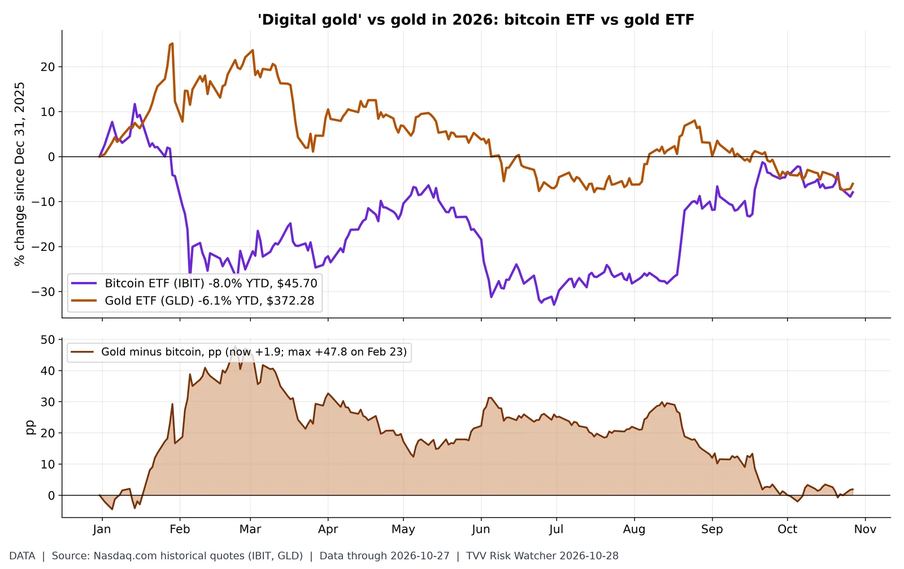
Digital gold vs real gold in 2026. 2026 YTD through Tue Oct 27: iShares Bitcoin Trust (IBIT) -8.0% vs SPDR Gold (GLD) -6.1%, a +1.9 pp gap in gold's favour (widest +47.8 pp on Feb 23). Last 20 sessions: IBIT -3.4%, GLD -2.8%. ETF closes, not spot prices. Source: https://www.nasdaq.com/market-activity/etf/ibit/historical
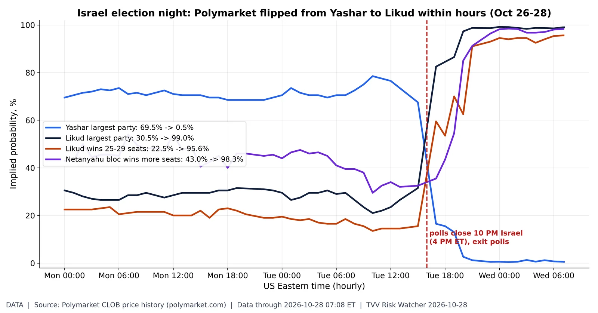
Betting markets flip overnight on Israel's vote. Polymarket hourly prices, Oct 26 00:00 ET to the ~7:10 AM ET Oct 28 fetch: Likud to win the most Knesset seats 30.5% -> 99.0%; Yashar 69.5% -> 0.5%; Likud 25-29 seats 22.5% -> 95.6%; Netanyahu bloc wins more seats 43.0% -> 98.3%. The pre-vote market favourite flipped after polls closed (10 PM Israel time = 4 PM ET). Final official results are due Nov 4. Source: https://polymarket.com/event/israeli-legislative-election-winner
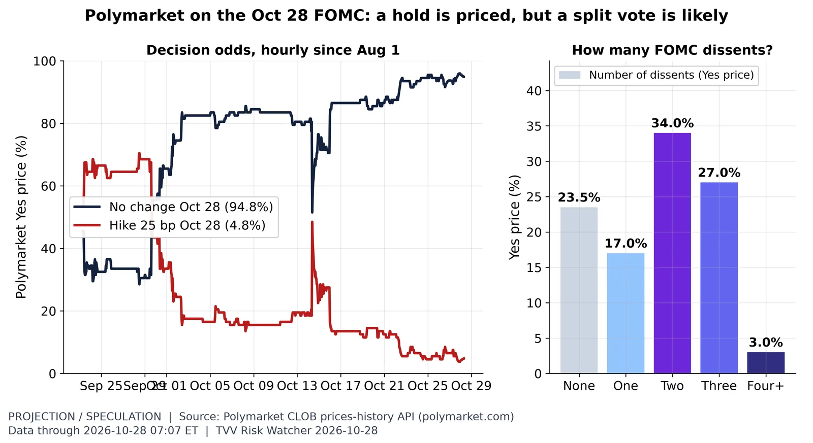
FOMC: hold priced, dissents expected. Polymarket ~07:07 ET Oct 28: no change Oct 28 94.8%, 25 bp hike 4.8%. Dissent count: none 23.5%, one 17.0%, two 34.0%, three 27.0%, four+ 3.0% (100 minus the none price implies about 76% odds of at least one dissent; the dissent market is thin, ~$33K volume, and its prices need not sum to 100). Crowd prices, not Fed guidance. Source: https://polymarket.com/event/fed-decision-in-october-20260617190323537
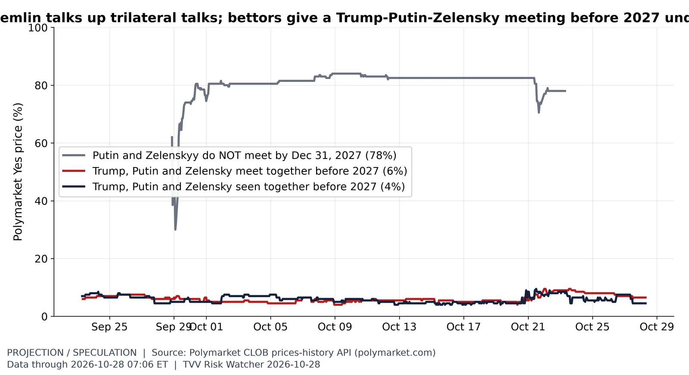
Summit talk vs summit odds. Polymarket ~07:06 ET Oct 28: Trump, Putin and Zelensky meet together before 2027 6%; seen together before 2027 4%; Putin and Zelenskyy do not meet at all by end-2027 78%. The meet-before-2027 price ranged 4.0-9.5% in October despite Kremlin talk of trilateral talks in mid-November. Thin markets ($60K-$108K volume); crowd prices, not forecasts. Source: https://polymarket.com/event/trump-putin-and-zelensky-meet-together-before-2027
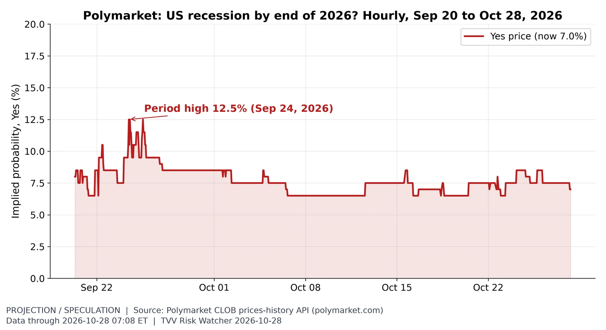
Recession odds. Traders price a 7.0% chance of a US recession by end-2026 (market rules define it), vs a high of 12.5% on Sep 24 in the API history window (hourly since Sep 20). Source: https://polymarket.com/event/us-recession-by-end-of-2026
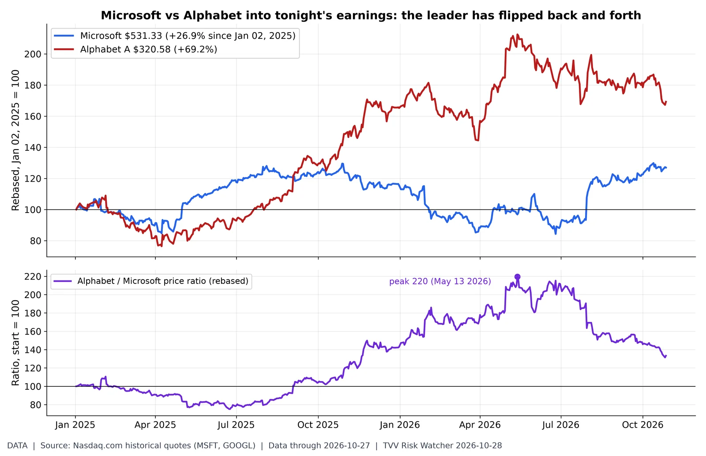
Microsoft vs Alphabet before tonight's reports. Both report after today's close. Since Jan 02, 2025: Microsoft +26.9% ($531.33), Alphabet +69.2% ($320.58), closes Tue Oct 27. 2026 YTD: Microsoft +9.9%, Alphabet +2.4%. The Alphabet/Microsoft ratio peaked at 220 on May 13, 2026 and is 133 now (start = 100). Source: https://www.nasdaq.com/market-activity/stocks/msft/historical
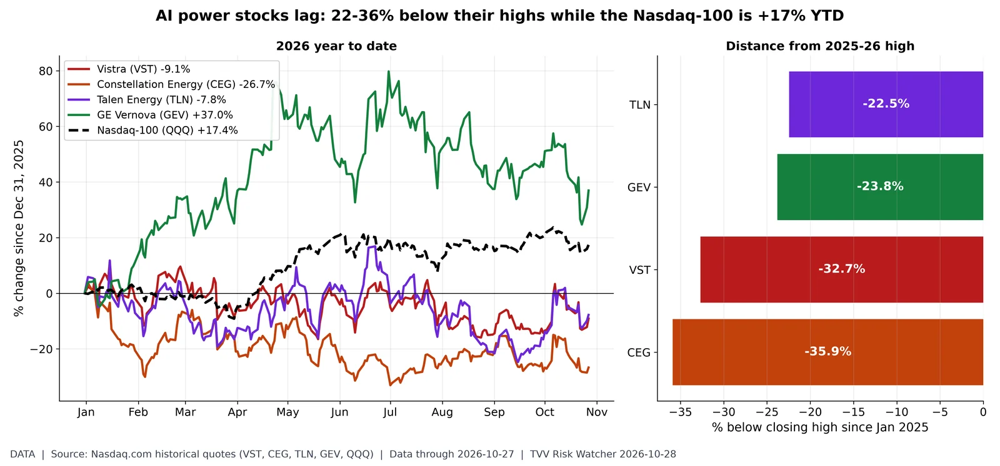
The AI power trade has cracked. Power producers and grid-equipment makers priced as AI data-center winners, closes Tue Oct 27: Constellation Energy $258.98, -26.7% YTD, 35.9% below its $403.95 high (Oct 15, 2025); Vistra $146.66, -9.1% YTD, 32.7% below its $217.92 high (Sep 22, 2025); GE Vernova $895.08, +37.0% YTD, 23.8% below its $1,174.86 high (Jun 30, 2026); Talen Energy $345.73, -7.8% YTD, 22.5% below its $445.84 high (Oct 08, 2025). Nasdaq-100 (QQQ) +17.4% YTD. Over-concentration risk: these valuations lean on hyperscaler data-center demand (MSFT/GOOGL report after today's close). Source: https://www.nasdaq.com/market-activity/stocks/vst/historical